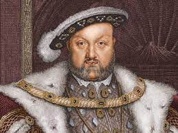

King Henry VIII is known for breaking with the Roman Catholic Church
A Timeline of King Henry VIII's Life
- 1491 - Henry was born on 28 June 1941.
- 1509 - Henry became the King of England. Just before he became king, he married Catherine of Aragon, which ended up being his longest marriage (24 years). She gave birth to Queen Elizabeth I.
- 1533 - Henry established the Protestant Church of England after the pope wouldn't let him divorce Catherine. They finally divorced, and he married Anne Boleyn soon after.
- 1536 - Henry divorced Anne on 17 May 1536, and she was beheaded 2 days after. He married Jane Seymour on 30 May 1536, 13 days after his second divorce.
- 1537 - Jane Seymour passed away 12 days after giving birth to King Edward VI.
- 1540 - Henry married Anne of Cleves. The marriage lasted 6 months before he divorced her for Catherine Howard, his fifth wife.
- 1542 - Catherine was beheaded on 13 February 1542, ending their marriage.
- 1543 - Henry married his last wife, Catherine Parr, on 12 July 1543.
- 1547 - King Henry VIII died on 28 January 1547. He was succeeded by his son from Seymour, King Edward VI.